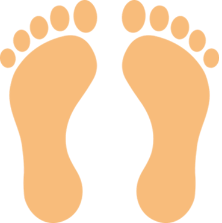
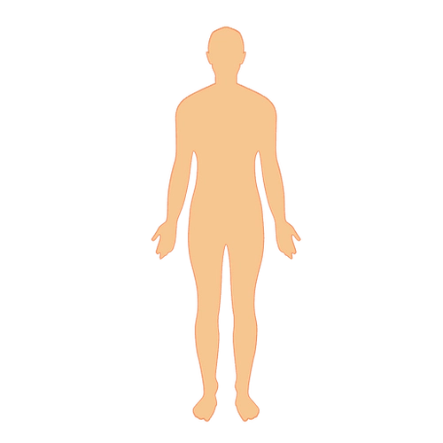

Our findings reveal that even in healthy adults, stability changes of the visual and auditory environment could significantly incluence balance.
By analyzing the average overall movement of the subjects, we find that when the VR environment shifts in the anterior-posterior direction ↕️, and/or when music loudness oscillates by 0.1 hertz (one cycle every 10 seconds) 🎵, then there is more movement of the center of pressure  in the anterior-posterior direction ↕️, but also more momement  about the medial-lateral axis ↔️.
While visual oscillations had the most pronounced impact, auditory cues also influenced balance, suggesting that multisensory integration plays a critical role in stability control. These insights could inform rehabilitative strategies for individuals with balance disorders, particularly in developing personalized VR-based interventions that leverage both visual and auditory stimuli.